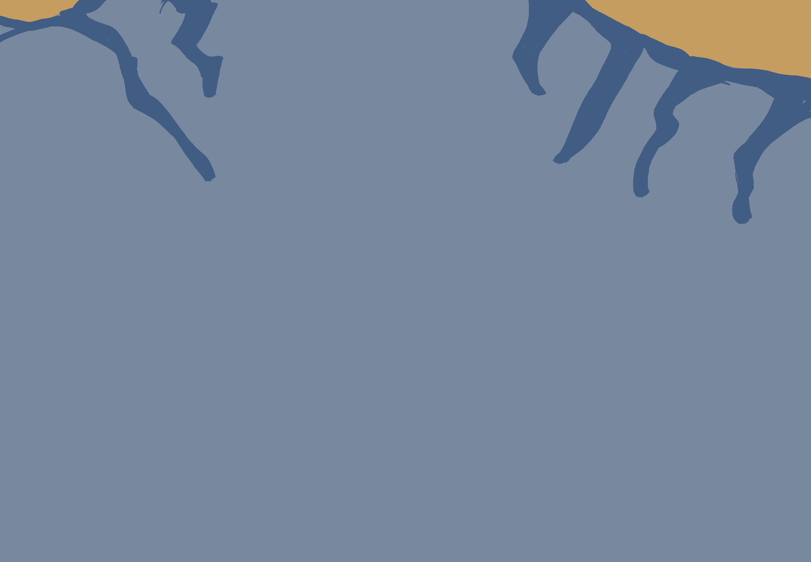
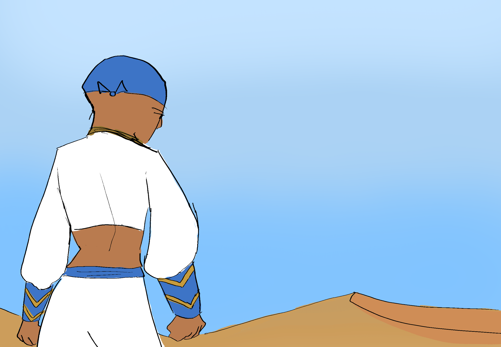
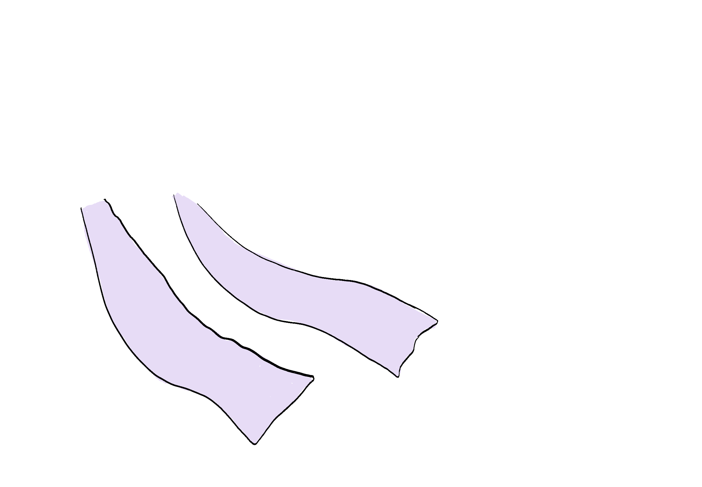
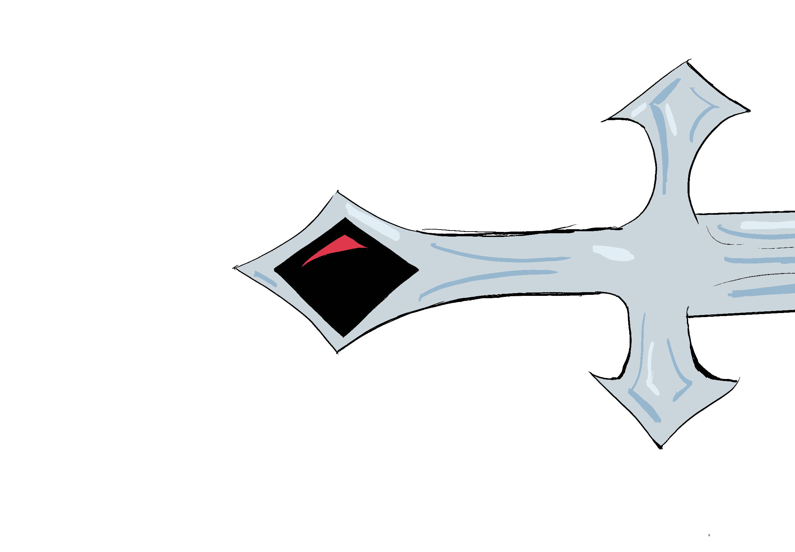
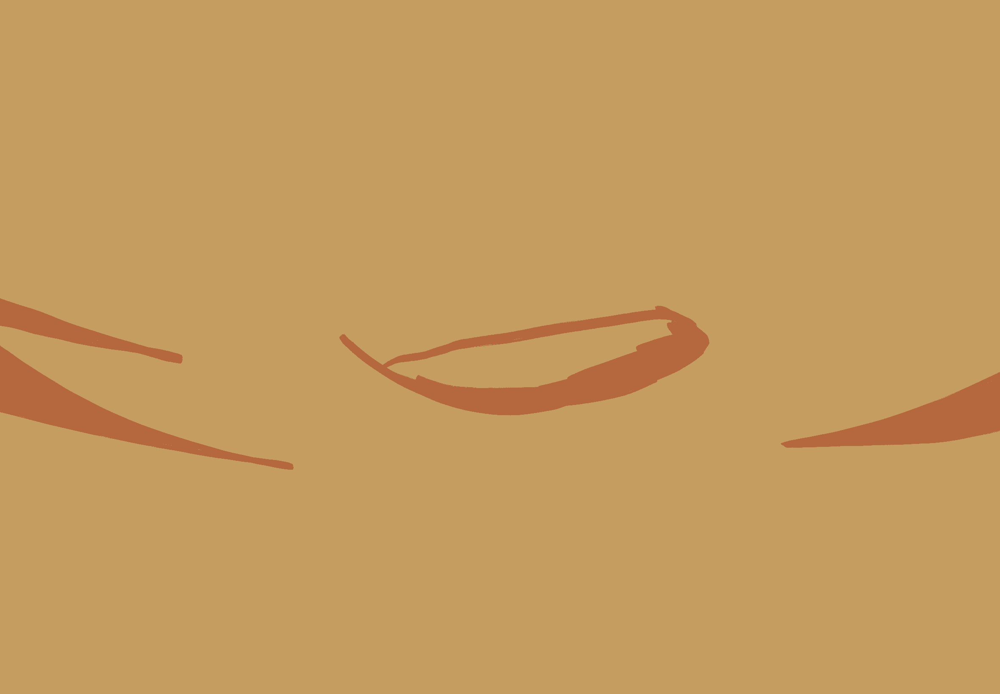
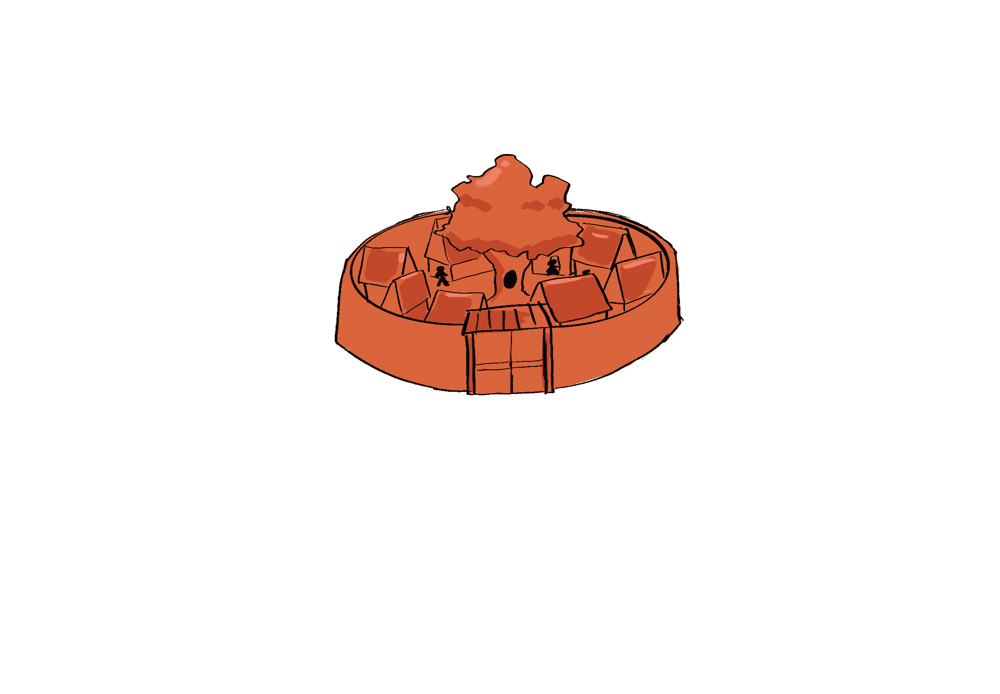

The Orb
An ancient object bestowed onto the Ona people from the ancestors.
Ancestors
Nobody really knows where the orb comes from, only that it's power saved the village in a dire time


Farah is the great protector of Ona, the mystical village hidden in the sands. Trained from birth as a warrior and a scholar, she is their greatest hero.
Trained and hardened by the sands and the greatest warriors in Ona.
Learnt under the greatest scholars of Ona, becoming a prodigy at a young age
Forged in the hidden fires beneath the sands, this sword has been passed through generations of Ona's greatest warriors. Now it belongs to Farah.

The blade is said to have a mind of its own, and can only be handled by a user of its choice.


The home of the Ona people, a place rich with culture and history, home of the orb.

An ancient object bestowed onto the Ona people from the ancestors.
Nobody really knows where the orb comes from, only that it's power saved the village in a dire time
I am a 2nd year multimedia student interested in
interactive technology
with a particular interest in video games
and visual designs
I am very interested in using technology
to express creativity.